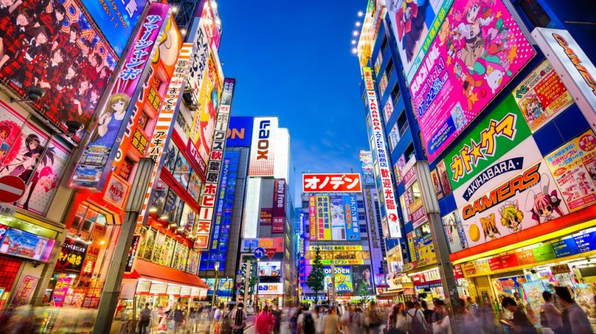
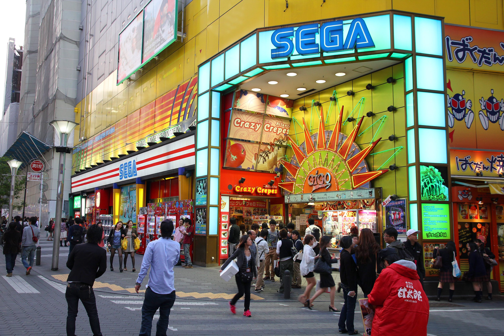

La cultura otaku
Una de las principales partes de la cultura conocidas de Japón es el manga y anime. Un movimiento globalizado actualmente que es parte de muchas personas alrededor del mundo. Es por eso que cuando se quiere visitar Japón, normalmente se piensa en sitios turísticos que tengan que ver con esta parte de su cultura pues hay demasiadas zonas que forman parte importante de este movimiento. Algunos sitios que pueden visitarse con este fin son:
- Akihabara: el paraíso Otaku
- Ikebukuro
- Museo Internacional de Manga de Kioto
- Sanrio Puroland
- Universal Studios Osaka

